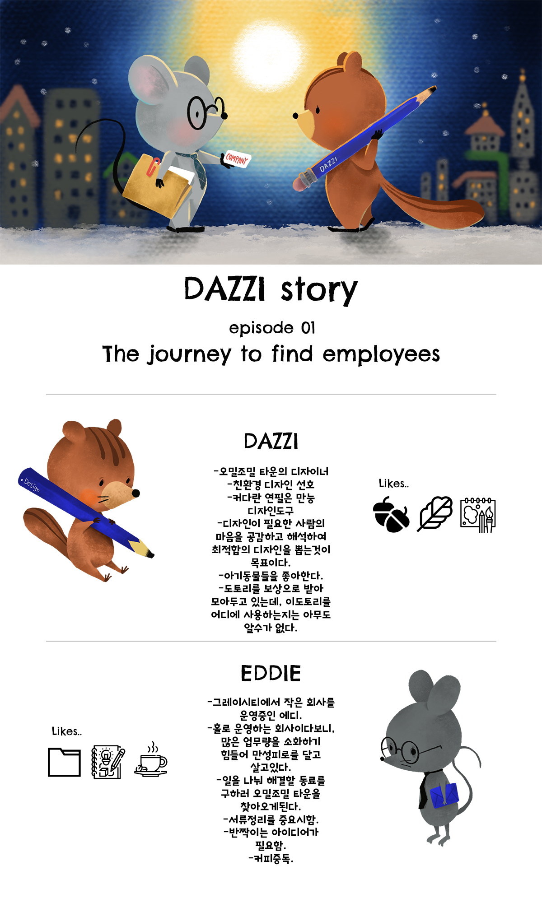

Character&illustration

DAZZI - "Eddie's Journey to Find Employees"
•기획:
1) '다찌'라는 주인공의 일화를 그린 일러스트.
2) 여러 이야기중에 첫번째 스토리로 '에디'라는 캐릭터가 직원을 찾아나서는 여정의 스토리.
3) 엔딩장면 일러스트와 캐릭터 소개로 상단에 배치 (스토리 작업 진행중)
•캐릭터 소개:
1) 다찌:(dazzi) 오밀조밀 타운의 메인 디자이너, 상상력이 풍부하고 자연과 함께하는 디자인이 목표인 다람쥐 캐릭터
2) 에디(eddie): 매일 열심히 일을하는 열정적인 생쥐. 하지만, 업무가 너무 많은 그의 사무실은 그레이시티에서 가장 늦게 불이꺼진다. 만성피로인 생쥐
•Tool:
- ipad pro11 / procreate